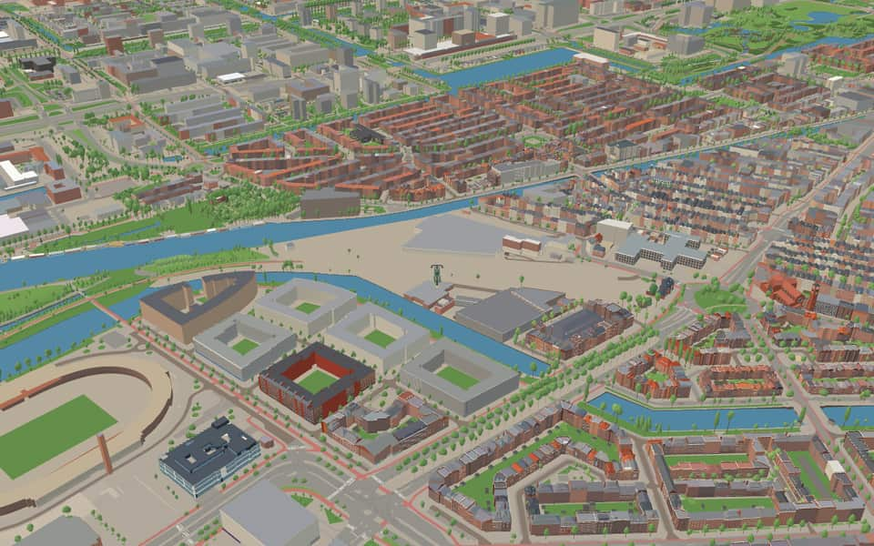
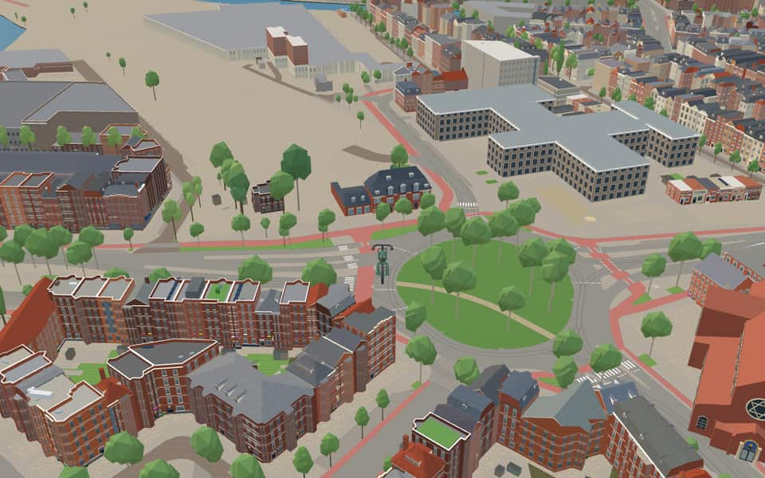
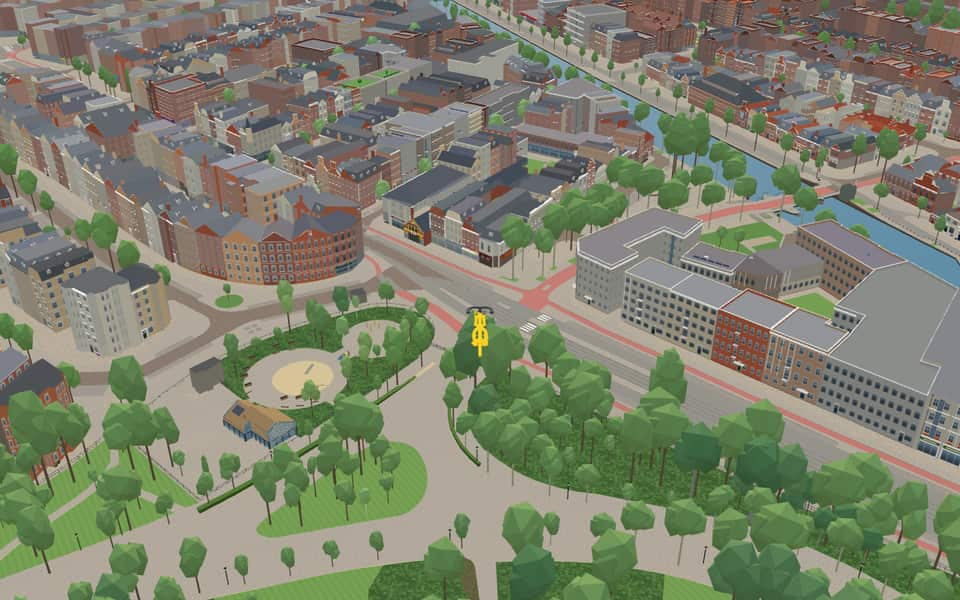
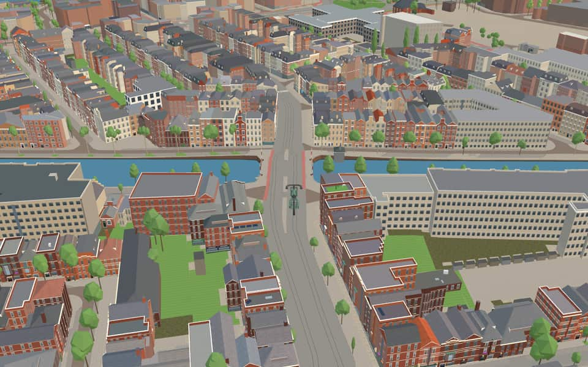

Quarter in Oud-Zuid
Schinkelbuurt
Schinkelbuurt ("Schinkel neighbourhood") is a little neighborhood of Amsterdam, Netherlands. It is located directly south of Amsterdam's city centre and it is part of the borough Amsterdam-Zuid, in the part of the city known as the "Old South" (Oud Zuid). Schinkelbuurt is roughly bounded by the water of the Schinkel river and the street Amstelveenseweg. en.wikipedia.org
The name. The streets here are named after shipping terms, such as Sluisstraat (lock), Zeilstraat (sail), Vaartstraat (canal), Havenstraat (harbour) and Karperweg (carp). nl.wikipedia.org


In the game
Frames from a ride through Schinkelbuurt.




5 more photos of Schinkelbuurt

.jpg){kind=link}


.jpeg){kind=link}

.jpg){kind=link}
Built here
Buildings modelled one by one for the ride.
Haarlemmermeerstation
OCCII / former horse-tram coach house
Did you know
Trivia the ride can show you here.
- One of Piet Mondrian's first cityscapes is ‘View of Schinkelbuurt’, painted around 1895. Wikipedia
- The ‘Double Neighbourhood’ by the Schinkel was demolished in the 1930s to widen the Schinkel and Amstelveenseweg. Wikipedia
- Since 1975 the Haarlemmermeerstation and its line to Amstelveen have been used by the Electric Museum Tramline. Wikipedia
- Hildo Krop's granite sculptures on the Zeilbrug show fishermen, ships and seals' heads. Wikipedia (translated from Dutch)
- The OCCII venue is in a horse-tram garage with stables built in 1883–84. Wikipedia
- The 1890 prison on the Havenstraat was converted from 2019 for the British School of Amsterdam. Wikipedia (translated from Dutch)
- HaarlemmermeerstationThe station was originally called Willemspark Station before adopting its current name. en.wikipedia.org
- HaarlemmermeerstationPassenger service ended in 1950, leaving only coal freight until 1972. en.wikipedia.org
- HaarlemmermeerstationThe station and its line became a tram museum route starting in 1975. en.wikipedia.org
- HaarlemmermeerstationParts of the old track briefly supplied materials for Schiphol construction between 1976 and 1981. en.wikipedia.org
- OCCIIThe original building was squatted in 1984 before being legalized five years later. en.wikipedia.org
- OCCIIArchitect Abraham Salm designed the structure originally as a horse tram garage in 1883-84. en.wikipedia.org
- Park de SchinkeleilandenThe Frans Otten Stadium has occupied the site since 2004. nl.wikipedia.org
- Park de SchinkeleilandenLandscape architects Sant and Co designed this four-island park. nl.wikipedia.org
23 more facts
- Park de SchinkeleilandenA continuous cycle path named Piet Kranenbergpad opened here in 2007. nl.wikipedia.org
- KabouterbrugThe name Kabouterbrug derives from the gnome movement, replacing earlier unofficial titles. nl.wikipedia.org
- KabouterbrugMajor maintenance work took the bridge out of service for a period in 2017. nl.wikipedia.org
- KabouterbrugSchoolchildren on bicycles were a primary reason for building this direct route quickly. nl.wikipedia.org
- ZeilbrugMunicipal documents once listed it only as bridge 348, ignoring the name Zeilbrug. nl.wikipedia.org
- ZeilbrugThe Amsterdam Street Names Book 2010 officially adopted the name Zeilbrug for bridge 348. nl.wikipedia.org
- ZeilbrugAmsterdam School architect Piet Kramer designed the bridge alongside engineer Wichert Arend de Graaf. nl.wikipedia.org
- ZeilbrugTram line 1 crossed this bridge starting in 1929 before line 2 took over in 1948. nl.wikipedia.org
- SchinkelA dam blocked the river in 1434 to stop shipping, forcing vessels to take a long detour via Spaarndam. nl.wikipedia.org
- SchinkelIn 1515, a drawbridge called an overtoom was built where only small ships could be pulled across manually. nl.wikipedia.org
- SchinkelUnlike city canals, the Schinkel still actively transports goods today. nl.wikipedia.org
- SchinkelA large community of living boats has settled near the lock on this waterway. nl.wikipedia.org
- StadiongrachtThe northern section now runs dry because it lost its direct water connection to the Noorder Amstel Canal. nl.wikipedia.org
- StadiongrachtA small lock exists here but no longer functions as one since water levels are identical on both sides. nl.wikipedia.org
- StadiongrachtThe canal's name does not appear in postal codes, while its quays carry distinct names like Afroditekade. nl.wikipedia.org
- HavenstraatHavenstraat means harbor street, named for a ship mooring place. nl.wikipedia.org
- HavenstraatNearby streets share shipping names like Vaartstraat and Zeilstraat. nl.wikipedia.org
- HavenstraatUntil 2024, the street contained only two odd house numbers: 3 and 5. nl.wikipedia.org
- ZeilstraatThe Zeilstraat received its name in 1908, referencing the canvas sail used to catch wind on vessels. nl.wikipedia.org
- ZocherstraatLouis Paul Zocher designed Amsterdam's Vondelpark together with his father Jan David Zocher. nl.wikipedia.org
- ZocherstraatThe name was officially assigned while construction work on the street was already underway. nl.wikipedia.org
- ZocherstraatOther Dutch cities including Leiden, Rotterdam, and Haarlem also feature a Zocherstraat. nl.wikipedia.org
- ZocherstraatA slight bend near the Amstelveenseweg was engineered in 1918 to allow trams to enter the street. nl.wikipedia.org
Names on the map
Where the canal, bridge and street names come from.
Canals and water
- OlympiakanaalThe sacred site in ancient Greece where the Olympic Games were first held, in 776 BC.
- SchinkelA schinkel is a short connecting stretch between two weteringen (drainage channels), in this case the Nieuwe Meer and the Overtoom. It is thought the connection owes its name to its shape: 'schinkel' is a synonym of 'schenkel', the lower leg between foot and knee. The quay was earlier called Visserkade by Nieuwer-Amstel. The municipality of Nieuwer-Amstel had named the streets Visserstraat, Alexanderstraat (council decision of Nieuwer-Amstel, 20 October 1882) and Willemsparkstraat (council decision of Nieuwer-Amstel, 30 January 1883), but in 1896 they were changed because of confusion with names that already existed in Amsterdam.
- StadiongrachtRefers to the neighbouring Olympic Stadium.
Bridges
- KabouterbrugThe Kabouterbrug is named after the Kabouter movement (1969-1974), a playful protest movement and local political party.Bridge 360: a movable steel bridge.
- ZeilbrugBridge 348: a movable reinforced concrete bridge.
Streets
- AmstelveensewegVillage. Before 1 January 1964 the municipality was called Nieuwer-Amstel. Before it was widened in 1898, the stretch of the road along the Vondelpark as far as the Overtoom was called Dubbele Buurt.
- BaarsstraatA freshwater fish: baars means perch.
- Derde SchinkelstraatA schinkel is a short connecting stretch between two weteringen (drainage channels), in this case the Nieuwe Meer and the Overtoom. It is thought the connection owes its name to its shape: 'schinkel' is a synonym of 'schenkel', the lower leg between foot and knee. The quay was earlier called Visserkade by Nieuwer-Amstel. The municipality of Nieuwer-Amstel had named the streets Visserstraat, Alexanderstraat (council decision of Nieuwer-Amstel, 20 October 1882) and Willemsparkstraat (council decision of Nieuwer-Amstel, 30 January 1883), but in 1896 they were changed because of confusion with names that already existed in Amsterdam.
- Eerste SchinkelstraatThe name recalls the old roadside inn Schinkelhaven. Before 1922 the street was part of the Schinkelkade.
- HavenstraatA mooring place for ships (harbour).
- Jan WilsbrugNamed after Jan Wils (1891-1972), architect of the Olympic Stadium and the two Citroën buildings on the Stadionplein. He also designed the City Theatre on the Kleine-Gartmanplantsoen.
- KarperstraatThe freshwater fish (the carp).
- KarperwegThe freshwater fish (the carp).
- Oranje NassaulaanThe House of Orange-Nassau is a branch of the House of Nassau.
- Piet KranenbergpadNamed after Piet Kranenberg, one of the people who saved the Olympic Stadium beside this path. In 1996, with Bram Mulder and the stadium director Otto Roffel, he set up the rescue and operating plan that led to its renovation, begun in 1998.
- Pieter LastmankadeAmsterdam painter (1583-1633), among other things of biblical scenes, and teacher of Rembrandt. By council decision of 10 January 1923 part of the quay was renamed Jan van Goyenkade.
- SchinkelhavenkadeThe name recalls the old roadside inn Schinkelhaven. Before 1922 the street was part of the Schinkelkade.
10 more streets with a story
- SchinkelhavenstraatThe name recalls the old roadside inn Schinkelhaven. Before 1922 the street was part of the Schinkelkade.
- SchinkelkadeA schinkel is a short connecting stretch between two weteringen (drainage channels), in this case the Nieuwe Meer and the Overtoom. It is thought the connection owes its name to its shape: 'schinkel' is a synonym of 'schenkel', the lower leg between foot and knee. The quay was earlier called Visserkade by Nieuwer-Amstel. The municipality of Nieuwer-Amstel had named the streets Visserstraat, Alexanderstraat (council decision of Nieuwer-Amstel, 20 October 1882) and Willemsparkstraat (council decision of Nieuwer-Amstel, 30 January 1883), but in 1896 they were changed because of confusion with names that already existed in Amsterdam.
- SluisstraatAn artificial water barrier (a lock), in which opening and closing gates controls the connection between two waters.
- SophialaanQueen Sophia Frederika Mathilda of Württemberg (1818-1877), the first wife of King William III.
- Tweede SchinkelstraatThe name recalls the old roadside inn Schinkelhaven. Before 1922 the street was part of the Schinkelkade.
- VaartstraatA canal (vaart).
- VeerstraatA veer is a place where, and a boat with which, people are taken across a waterway (a ferry).
- VlietstraatA drainage canal (vliet).
- ZeilstraatThe cloth on vessels that catches the wind (the sail).
- ZocherstraatLouis Paul Zocher (1820-1915), landscape architect, designer and builder of the Vondelpark (1864).
1 other street without a recorded story
Zeilbrug